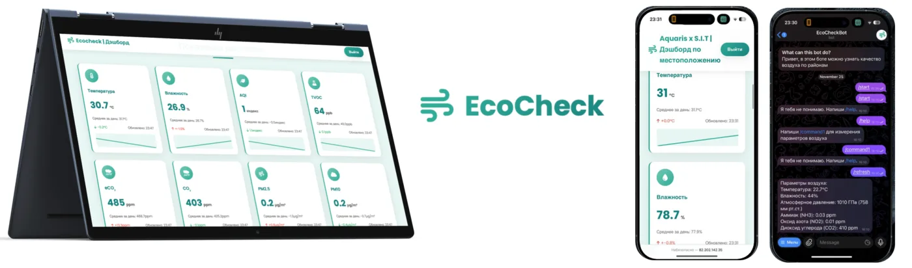
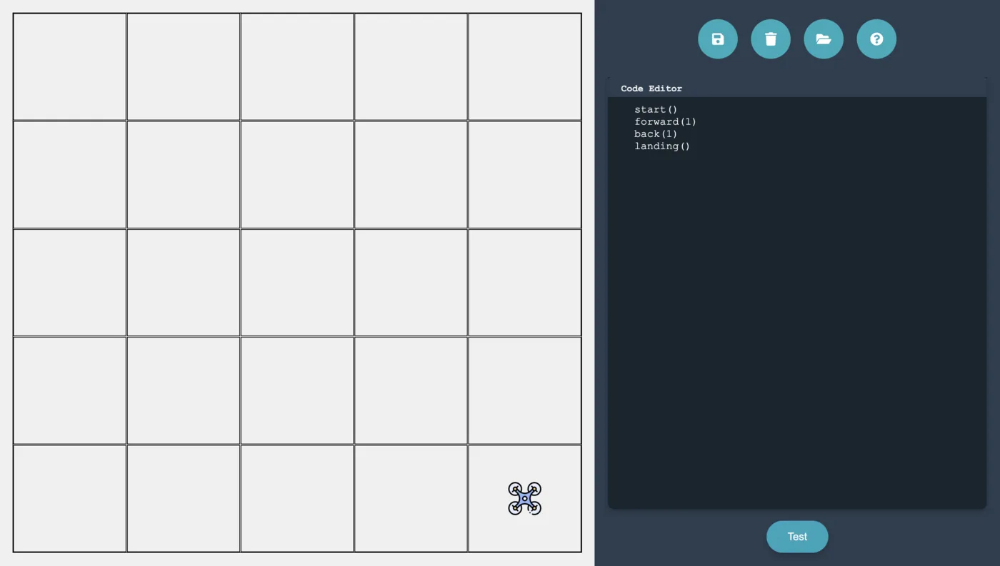

Научно-технологический университет «Сириус»
Студент 1 курса. Развиваюсь в программной инженерии, робототехнике и создании сложных технологических систем.
01курс
Разработчик и инженер. Собираю продукты на стыке embedded, робототехники, искусственного интеллекта и web — от IoT-платформ до автономных роботов и систем компьютерного зрения.

Учусь, разрабатываю собственные продукты и получаю опыт на реальных задачах от технологических компаний.
Студент 1 курса. Развиваюсь в программной инженерии, робототехнике и создании сложных технологических систем.
C · C++ · Python · JavaScript · TypeScript
ROS / ROS 2 · ESP32 · Arduino · Pioneer SDK · MAVLink
OpenCV · YOLO · NumPy · FastAPI · Flask · React · Electron
Работа над MarketLog / «Яндекс Топологией»: распознавание плана помещения, генерация сетки и оптимальное размещение стеллажей, зарядных станций и рабочих зон.
Проекты мониторинга сооружений и инвентаризации складов: обработка аэросъёмки, детекция дефектов, планирование маршрутов и управление Geoscan Pioneer.
Мне интересны задачи, где программирование встречается с реальным миром: датчиками, микроконтроллерами, дронами, компьютерным зрением и понятными пользовательскими интерфейсами.
Люблю быстро проверять идеи, собирать рабочие прототипы и доводить их до продукта, который можно показать, протестировать и использовать.
Сейчас ищу стажировку, первую работу или участие в амбициозном технологическом проекте.
FrogeeSoft / S.I.T — мой личный технологический проект. В его рамках я создаю инструменты для разработчиков, проектирую электронные устройства, собираю робототехнические системы и проверяю идеи на инженерных соревнованиях и хакатонах.
Также я развиваю образовательную платформу sit-edu.ru, веду канал проекта и публикую материалы о разработке, робототехнике, электронике и собственных экспериментах.
C, C++, Arduino, ESP32, ROS, датчики, прототипирование устройств и автономные системы.
Python, OpenCV, YOLO, обработка изображений, детекция объектов и интеграция AI в прикладные системы.
React, JavaScript, TypeScript, интерфейсы, адаптивная вёрстка и desktop-приложения.
Проекты из моего GitHub и резюме. Публичная статистика репозиториев обновляется через GitHub API при открытии сайта.
 Яндекс · Большие вызовы
Яндекс · Большие вызовы
Сервис для проектирования роботизированных складов. Система получает план помещения, распознаёт доступные зоны, строит сетку и формирует эффективное размещение стеллажей, зарядных станций и рабочей области.

Комплекс для роботизации склада: наземный ROS-робот доставляет грузы, а модуль инвентаризации распознаёт план, строит граф, прокладывает маршруты и считывает QR-коды с помощью Geoscan Pioneer.

Система, созданная при поддержке ГК «Геоскан»: дрон собирает фотографии объекта, Metashape строит ортофотофасад, а YOLO находит трещины. Backend — FastAPI, интерфейс — React.
Подробнее ↗
Платформа для быстрого прототипирования embedded- и IoT-устройств: собственный модуль, редактор кода, язык сценариев и набор встроенных библиотек.
Подробнее ↗
Графический редактор цифровых схем с drag-and-drop, логическими элементами и симуляцией сигналов в реальном времени.
Подробнее ↗
Кроссплатформенный Markdown-редактор с предпросмотром, подсветкой синтаксиса, темами, вкладками и системой плагинов.
Подробнее ↗
Библиотека и платформа для объединения датчиков качества воздуха в единую сеть и удобной работы с экологическими данными.
Подробнее ↗
AI-наставник для подготовки к ОГЭ и ЕГЭ: помогает разбирать учебные темы, строить план занятий и получать понятные объяснения.
Подробнее ↗
Открытая образовательная экосистема для сборки и программирования дронов с собственным языком FGSD, редактором и веб-симулятором.
Подробнее ↗Больше desktop-, web-, embedded- и робототехнических проектов — в профиле GitHub.
Все репозитории ↗Быстро собираю минимальную версию, проверяю ключевую гипотезу и только потом усложняю систему.
Связываю железо, алгоритмы, API и интерфейс так, чтобы продукт работал как единое целое.
Осваиваю новые технологии под реальную задачу и сразу использую их в проекте.
Готов к стажировке, первой работе, хакатонам и совместной разработке технологических продуктов.